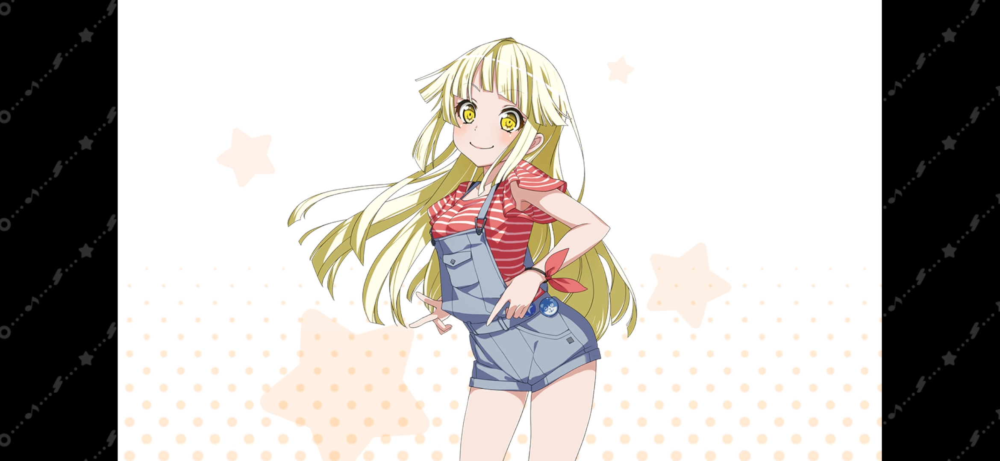
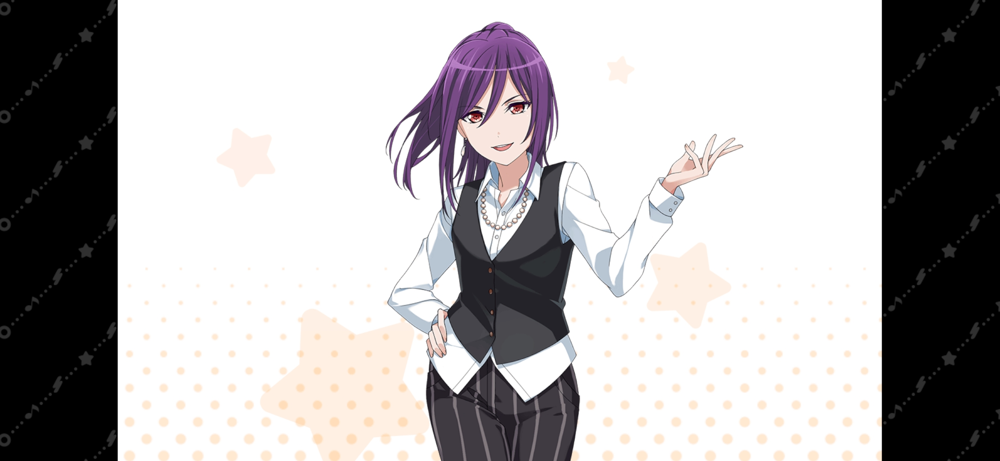
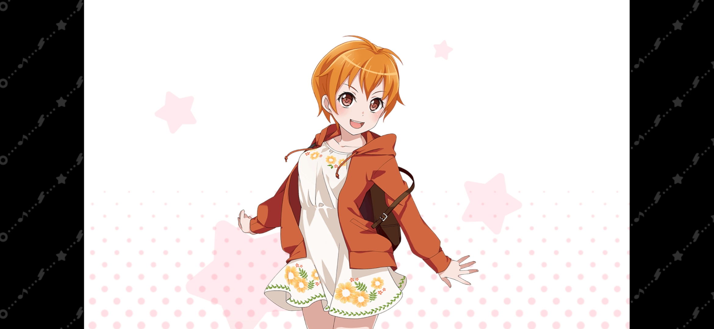
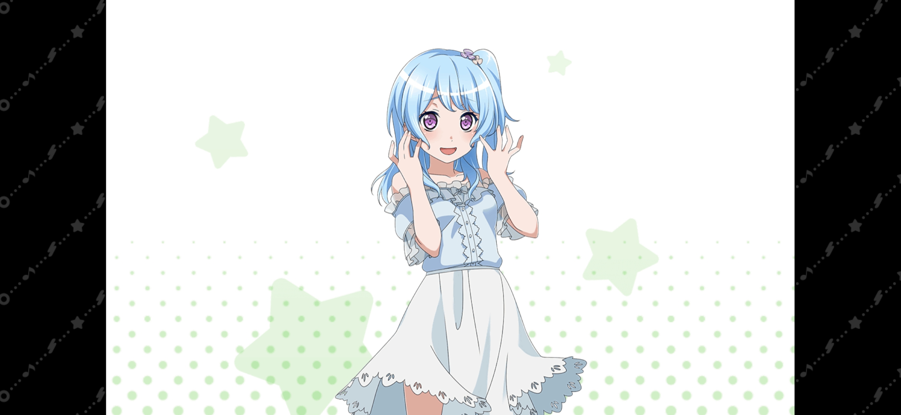
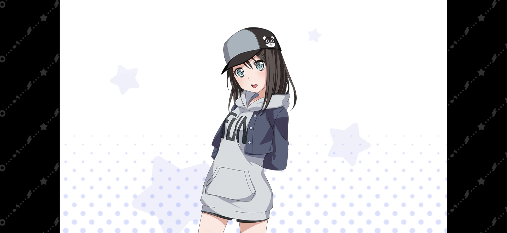

| 圖片 | 姓名 | 擔當 | 聲優 | 生日 | 身高 | 簡介 |
|---|---|---|---|---|---|---|
|  | 弦捲心 | 主唱 | 伊藤美來 | 8月8日 | 155cm | 樂隊Hello, Happy World!的主唱，是HHW三笨蛋之一。 相當富裕的家庭的獨生女，只要萌生了「想要做」的念頭無論如何都會去實現。 好奇心旺盛，眼神中總是充滿著好奇心的光芒。 最喜歡看到人們的笑容。 就讀花咲川女子學園。 什麼食物都喜歡！不存在討厭的食物！ 喜歡到處尋找快樂的事，不擅長與消極的人打交道。 同時也是Hello, Happy World!的作詞作曲人。 作曲方式是哼唱，作詞方式是畫圖。 |
|  | 瀨田薰 | 主音吉他手 | 田所梓 | 2月28日 | 170cm | 就讀於四葉女子大學。 高中時是演劇部的成員，粉絲眾多，在學校裡十分有名，因此在校內總是被粉絲包圍。 升上大學後依然虜獲了眾多女生的芳心。 有著不凡的氣質，也被很多人稱為「王子」。 十分怕鬼，在happyhappy島上的洞穴裡因為過於害怕還唱起了歌。 除了演戲外，運動也非常在行。 其中有一個興趣是賽馬，擁有帶跑馬場的別墅，所以薰的家境也很可觀。 |
|  | 北澤育美 | 貝斯手 | 吉田有裡 | 7月30日 | 152cm | 總是十分開朗活潑，感性而又純粹的孩子。 運動神經非常好，是當地的壘球隊的王牌選手及隊長，被隊員稱作Captain，就讀花咲川女子學園。 家中開著一家精肉店，可樂餅非常有名。 和自己一樣元氣的心、香澄是好朋友。 非常喜歡米歇爾並且時常掛在米歇爾身上。 |
|  | 松原花音 | 鼓手 | 豐田萌繪 | 5月11日 | 156cm | 就讀慶鵬女子大學文學部。 因為內向的關係整天提心弔膽，稍微有點笨拙。 對於被拜託了的事不擅長拒絕，很容易被卷進麻煩裡。 喜歡甜點和可愛的東西，是個有點保守消極的女孩。 小時候學習演奏爵士鼓，可是之後開始失去興趣和時間。 在拉著鼓去賣的一天被心「發掘」，在街上做了個表演，之後還拉攏了迷糊的花音進自己一時興奮想組的樂隊。 |
|  | 奧澤美咲 | 鍵盤手 | 黑澤朋世 | 10月1日 | 157cm | 以「普普通通就是最好」為座右銘，稍微有點冷淡的女孩子。 就讀於花咲川女子學園。 對任何事都只做到適當的程度。 打工的時候穿著商店街吉祥物「米歇爾」的熊布偶裝，也是因此被心發現，連帶中之人拉進了樂隊裡。 喜歡家庭餐廳的菜色，討厭香菜。 興趣是做羊毛氈（送給妹妹）。 本人其實喜歡輕飄飄那種可愛的東西，但是因為覺得自己不適合就把羊毛氈和玩偶都送給妹妹。 雖然樣子看似不太擅長運動，事實上她是網球部的成員。 |